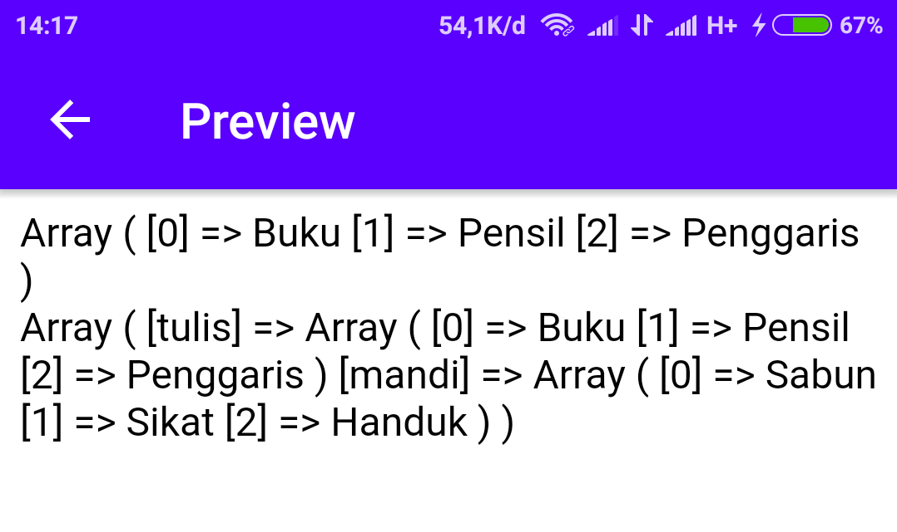
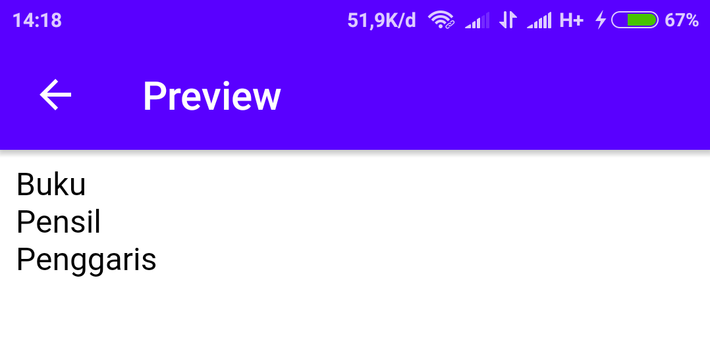

Array merupakan variable spesial karena dalam satu variable tersebut dapat memiliki banyak nilai di dalamnya.
Contoh:
<?php
$alattulis = array("Buku", "Pensil", "Penggaris");
echo "Saya punya " . $alattulis[0] . "<br>";
echo "Saya punya " . $alattulis[1] . "<br>";
echo "Saya punya " . $alattulis[2];
?>
Hasilnya:
Membuat Array
Berikut cara membuat sebuah array.
Contoh:
<?php
$alattulis = array();
$alattulis[] = "Buku";
$alattulis[] = "Pensil";
$alattulis[] = "Penggaris";
print_r($alattulis);
echo "<br>";
//Array lebih komplek
$tulis = array();
$tulis[] = "Buku";
$tulis[] = "Pensil";
$tulis[] = "Penggaris";
$mandi = array();
$mandi[] = "Sabun";
$mandi[] = "Sikat";
$mandi[] = "Handuk";
$alat = array();
$alat['tulis'] = $tulis;
$alat['mandi'] = $mandi;
print_r($alat);
?>
Hasilnya:

Menghitung Panjang Array
Untuk menghitung panjang sebuah array menggunakan perintah count().
Contoh:
<?php
$alattulis = array("Buku", "Pensil", "Penggaris");
echo count($alattulis);
?>
Hasilnya:
Menampilkan Array
Menampilkan array ada 2 cara yaitu dengan foreach seperti yang sudah dijelaskan di materi Loop dan menggunakan for.
Contoh:
<?php
//Menggunakan for
$alattulis = array("Buku", "Pensil", "Penggaris");
$panjang_arr = count($alattulis);
for($i=0; $i<$panjang_arr; $i++){
echo $alattulis[$i]."<br>";
}
?>
Hasilnya:
